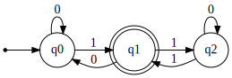
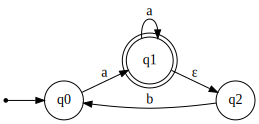

Finite Automata Examples¶
On this page, we give some short examples with discussion for the finite automata (sometimes called finite state machines) classes and methods in this package. At a high level, a finite automaton (FA) is an abstract machine that can be in any one of a finite number of states, and moves between states based on a transition function in response to reading characters from an input string. The FA will accept or reject an input string depending on its current state.
For a detailed overview of this topic, see this Wikipedia article or these lecture notes.
Reading input¶
In this example, we first define a function that takes in an automaton and asks the user for input strings, printing whether the input was accepted or rejected:
def read_user_input(my_automaton):
try:
while True:
if my_automaton.accepts_input(input("Please enter your input: ")):
print("Accepted")
else:
print("Rejected")
except KeyboardInterrupt:
print("")
Deterministic finite automaton (DFA)¶
To use this function, let's first define a DFA. For a detailed definiton, see this Wikipedia article on DFAs.
from automata.fa.dfa import DFA
# DFA which matches all binary strings ending in an odd number of '1's
my_dfa = DFA(
states={'q0', 'q1', 'q2'},
input_symbols={'0', '1'},
transitions={
'q0': {'0': 'q0', '1': 'q1'},
'q1': {'0': 'q0', '1': 'q2'},
'q2': {'0': 'q2', '1': 'q1'}
},
initial_state='q0',
final_states={'q1'}
)
We can generate a picture of our DFA using the package:
This produces the following:

Now that we've defined our DFA, we can see our funciton in action:
Nondeterministic finite automaton (NFA)¶
We can also do the same with an NFA we define. Note that the transition dictionary for the NFA has a different structure than that of the DFA, and that we are working over a different input alphabet than the previous example. For a detailed definiton, see this Wikipedia article on NFAs.
from automata.fa.nfa import NFA
# NFA which matches strings beginning with "a", ending with "a", and
# containing no consecutive "b"s
my_nfa = NFA(
states={"q0", "q1", "q2"},
input_symbols={"a", "b"},
transitions={
"q0": {"a": {"q1"}},
"q1": {"a": {"q1"}, "": {"q2"}},
"q2": {"b": {"q0"}},
},
initial_state="q0",
final_states={"q1"},
)
Similar to the DFA, we can generate a picture of our NFA:
This produces the following:

We can call our function as in the prior example:
Subset for NFAs¶
The NFA does not have a built-in method for checking whether it is a subset
of another NFA. However, this can be done using existing methods in the
package:
import string
from automata.fa.nfa import NFA
def is_subset(nfa1, nfa2):
# In the following, we have nfa1 and nfa2 and want to determine whether
# nfa1 is a subset of nfa2.
# If taking the union of nfa2 with nfa1 is equal to nfa2 again,
# nfa1 didn't accept any strings that nfa2 did not, so it is a subset.
return nfa1.union(nfa2) == nfa2
To see our function in action, we need to define some NFAs. We can do this easily by converting from regular expressions. For more information about this equivalence, see the Wikipedia article on regular languages:
alphabet = set(string.ascii_lowercase)
nfa1 = NFA.from_regex("abc", input_symbols=alphabet)
nfa2 = NFA.from_regex("(abc)|(def)", input_symbols=alphabet)
nfa3 = NFA.from_regex("a*bc", input_symbols=alphabet)
With these NFAs, we can now call the function and check that it matches the expected results.
print(is_subset(nfa1, nfa2)) # True
print(is_subset(nfa1, nfa3)) # True
print(is_subset(nfa2, nfa3)) # False
Edit distance automaton¶
The following example is inspired by this blog post. Essentially, we want to determine which strings in a given set are within the target edit distance to a reference string. We do this by creating an edit distance NFA and intersecting it with a DFA recognizing our original set of strings:
import string
from automata.fa.dfa import DFA
from automata.fa.nfa import NFA
def words_within_edit_distance(edit_distance, reference_string, target_words):
input_symbols = set(string.ascii_lowercase)
# Construct DFA recognizing target words
target_words_dfa = DFA.from_finite_language(
input_symbols,
target_words,
)
# Next, construct NFA recognizing all strings
# within given edit distance of target word
words_within_edit_distance_dfa = DFA.from_nfa(
NFA.edit_distance(
input_symbols,
reference_string,
edit_distance,
)
)
# Take intersection and return results
found_words_dfa = target_words_dfa & words_within_edit_distance_dfa
return set(found_words_dfa)
target_words = {"these", "are", "target", "words", "them", "those"}
reference_string = "they"
edit_distance = 2
found_words = words_within_edit_distance(edit_distance, reference_string, target_words)
# Set is {"these", "them"}
print(
f"All words within edit distance {edit_distance} of "
f"'{reference_string}': {found_words}"
)
Converting NFA to Regular Expression¶
You can convert an NFA (or DFA) to an equivalent regular expression using the GNFA class,
which implements Kleene's algorithm:
from automata.fa.nfa import NFA
from automata.fa.gnfa import GNFA
# Define an NFA that accepts strings with 'a' at the beginning and end,
# and no consecutive 'b's
my_nfa = NFA(
states={'q0', 'q1', 'q2'},
input_symbols={'a', 'b'},
transitions={
'q0': {'a': {'q1'}},
'q1': {'a': {'q1'}, '': {'q2'}},
'q2': {'b': {'q0'}}
},
initial_state='q0',
final_states={'q1'}
)
# Convert to a regular expression
regex = GNFA.from_nfa(my_nfa).to_regex()
print(regex) # Outputs the equivalent regular expression
This works for DFAs as well:
from automata.fa.dfa import DFA
from automata.fa.gnfa import GNFA
# DFA that accepts binary strings ending in '1'
my_dfa = DFA(
states={'q0', 'q1'},
input_symbols={'0', '1'},
transitions={
'q0': {'0': 'q0', '1': 'q1'},
'q1': {'0': 'q0', '1': 'q1'}
},
initial_state='q0',
final_states={'q1'}
)
# Convert to regex
regex = GNFA.from_dfa(my_dfa).to_regex()
print(regex) # Outputs: (0|1)*1
Making a transition table¶
The example below is adapted from the visual automata library. This function takes in a DFA or NFA and returns the corresponding transition table.
The start state is prefixed with → and final states are prefixed
with *.
import pandas as pd
def make_table(target_fa) -> pd.DataFrame:
initial_state = target_fa.initial_state
final_states = target_fa.final_states
table = {}
for from_state, to_state, symbol in target_fa.iter_transitions():
# Prepare nice string for from_state
if isinstance(from_state, frozenset):
from_state_str = str(set(from_state))
else:
from_state_str = str(from_state)
if from_state in final_states:
from_state_str = "*" + from_state_str
if from_state == initial_state:
from_state_str = "→" + from_state_str
# Prepare nice string for to_state
if isinstance(to_state, frozenset):
to_state_str = str(set(to_state))
else:
to_state_str = str(to_state)
if to_state in final_states:
to_state_str = "*" + to_state_str
# Prepare nice symbol
if symbol == "":
symbol = "λ"
from_state_dict = table.setdefault(from_state_str, dict())
from_state_dict.setdefault(symbol, set()).add(to_state_str)
# Reformat table for singleton sets
for symbol_dict in table.values():
for symbol in symbol_dict:
if len(symbol_dict[symbol]) == 1:
symbol_dict[symbol] = symbol_dict[symbol].pop()
df = pd.DataFrame.from_dict(table).fillna("∅").T
return df.reindex(sorted(df.columns), axis=1)